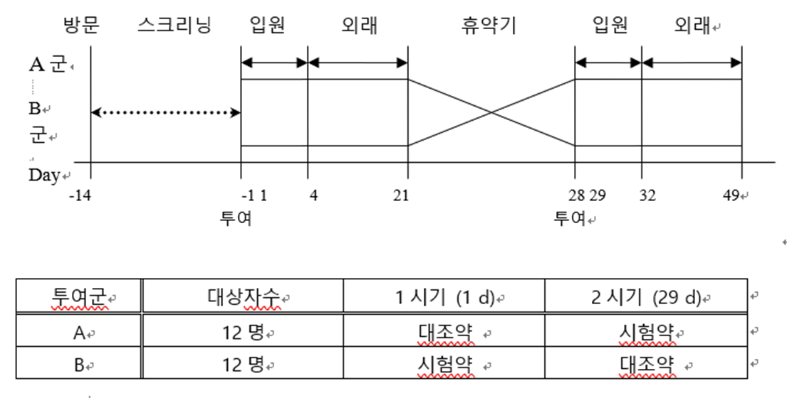
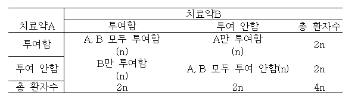

Guideline for Industry E9 Statistical Principles for Clinical Trials part 1#
1. INTRODUCTION#
A. Background and Purpose#
본 문서는 Sponsor에게 전반적인 임상 시험의 설계, 분석 및 평가에 대해 지침을 주기 위한 목적
B. Scope and Direction#
본 문서는 통계적인 원칙(statistical principles)에 초점을 두었으며, 구체적인 통계적 절차나 방법에 대해서는 다루지 않음
임상 시험에 있어 모든 통계적 일은 ‘Statistician’에게 책임이 있기 때문에, 본 지침에 명시된 원칙을 지키기 위해 충분한 교육 및 경험을 갖추어야 함
Protocol 및 Protocol amendments에서 ‘trial statistician’은 통계 부분이 적절히 작성되었는지 확인이 꼭 필요
본 지침서는 확증적 임상시험(confirmatory trial)에 대한 내용을 주로 다룸.
본 지침서에 있는 대부분의 원칙들은 minimizing bias 와 maximizing precison 을 하는 것을 다루고 있음.
Bias가 있으면 임상 시험에서 타당한 결론을 도출하는 데에 있어서 큰 방해가 될 수 있기 때문에 Bias를 최대한 줄이려고 하는 것이 중요함
본 지침서는 대부분 ‘frequentist methods’ 에 대해서 설명하고 있지만, Bayesian 방법도 상황이 맞다면 충분히 고려될 수 있음
2. CONSIDERATIONS FOR OVERALL CLINICAL DEVELOPMENT#
A. Trial Context#
Development Plan
신약 임상 개발의 목표는 신약이 어떤 용량(dose)과 기간(schedule)에서 안전성과 유효성을 동시에 보이는지를 찾아내고, 허용할 수 있는 risk-benefit을 만족하는 용량과 기간을 찾는 데에 있다. (약의 용량이 높거나, 기간이 길면 유효성은 높게 나타나겠지만, 안전성이 떨어질 수 있고, 반대의 상황은 안전성이 높아도 유효성은 낮게 나타날 수 있어, 적절한 용량 및 기간을 설정하는 것이 중요)
Confirmatory Trial
확증적 임상시험(Confirmatory Trail)은 사전(Protocol 작성 시)에 가설을 명시하고 이후에 평가하는 적절히 통제된 임상시험이다. (유효성 혹은 안전성은 꼭 확인해야한다.)
Effect size(유효성 평가 결과)에 대해서 통계적 유의성 뿐만 아니라 임상적 유의성(clinical significance)도 중요
Confirmatory trials는 claim(약의 효과?)를 뒷받침하는 확실한 증거를 제공하기 위한 것으로 Protocol과 SOP(표준 작업 지침서)를 준수하는 것이 특히 중요
어쩔 수 없이 변화가 있다면(Protocol 변화로 생각됩니다. Protocol 내 통계 분석 방법 변경등등..) 왜 변했는지 설명이 되어야 하고 문서화
Exploratory Trial
확증적 임상시험의 이론적 근거와 설계는 대부분 탐색적 임상시험(Exploratory trial) 연구의 결과를 이용
유효성 결과를 입증하기 보다, 새로운 사실을 알아내는 데에 초점을 둠
하나의 임상에서 confimatory(1차 유효성 평가 변수) 와 exploratory (탐색적 평가 변수) 양상을 모두 확인 할 수 있고, Protocol에는 유효성 분석(confimatory)을 위한 부분과 탐색적 분석을 위한 부분을 명확하게 구분
B. Scope of Trials#
Population
임상시험에 참가하는 대상자를 어떤 기준으로 선택하냐에 따라 임상 효과(clinical effect)의 결과가 달라질 수 있음 ( narrow subgroup(예를 들어 혈압이 아주 높은 대상자)에 대해서만 임상을 진행하면 약의 효과가 아주 뛰어난 것으로 나타날 가능성이 높다. 하지만 실제로 약의 target이 혈압이 아주 높은 대상자 뿐만 아니라, 적당히 높은 대상자를 target할 수 도 있기 때문에 적절한 선정/제외 기준을 설정하여 대상자를 모집하는 것이 중요)
Primary and Secondary Variables
Primary variable (Primary endpoint)
임상시험의 주요 목표와 가장 관련이 있는 변수로 주로 유효성을 입증하나, Safety/tolerability 관련해서 확인할 때도 있음
Sample size를 추정하는 데에 이용
Protocol에 기술 필요(왜 Primary endpoint로 선택되었는지 이유와 함께)
Unblinding 이후 Primary endpoint를 변경하는 것은 불가(Bias 발생하기 때문)
Secondary variable
Primary objective를 보조하기 위한 변수
Composite Variables (복합 변수)
Primary variable을 단일 변수로 선택할 수 없는 경우, 사전 정의된 알고리즘을 사용하여 여러가지 측정 결과를 단일 또는 복합 변수로 통합하여 사용하는 것도 유용
Type 1 error 조정 필요 없이 다중성 문제 해결 가능
Composite variable가 Primary variable로 사용된 경우, Composite variable을 구성하는 각각의 변수를 따로 분석하는 것도 임상적으로 의미가 있을 수 있음, (ex: 정신 질환 확인에 사용되는 척도)
Global Assessment Variables(종합평가변수)
전반적인 유효성, 안전성 및 치료의 유용성을 측정하기 위한 변수
Primary variable로 사용하는 것은 권하지 않음 ( 예를 들어 A약과 B약의 global assessment variable을 비교할 때, A약은 약의 효과는 좋으나 안전성이 낮고, B약은 약의 효과는 안 좋으나 안전성이 높은데, A약과 B약이 차이가 없다고 결과가 나올 수 있기 때문)
Multiple Primary Variables
각 변수가 치료 효과의 범위를 충분히 반영할 수 있는 경우에 두개 이상의 Primary variable을 사용하는 것이 바람직한 경우가 있음
해석 방법을 자세하게 기술
시험 목적에 영향을 끼치는 변수가 하나인지, 일부인지 모두인지 자세하게 기술
가설과 Param(mean, percentage, distribution), 검증 방법에 대해 자세하게 기술
다중성 문제로 발생할 수 있는 Type 1 error와 이를 조정하는 방법에 대해 자세하게 기술
만약 시험 목적이 모든 변수들의 효과를 증명하는 것이라면, Type 1 error는 조정하지 않아도 되지만, Type 2 error와 sample size 계산 시에 영향을 주는 점에 대해서는 주의 깊게 고려 필요
Surrogate Variables(대리변수)
실제 임상 효능을 관찰하여 대상자에 대한 유익성을 평가하는 것이 실용적이지 않은 경우, 간wjq적인 기준(대리변수)을 고려할 수 있음
대리변수 사용 시 고려해야 하는 두 가지 원칙
대리변수가 임상 결과에 대한 실질적 예측 지표가 아닐 수 있다.
대리변수는 이상반응에 대비하여 직접적으로 평가될 수 있는 임상 유익성의 정량적 측정치를 산출하지 않을 수 있다
대리변수를 사용하기 위한 통계적인 기준들이 제안되고 있으나, 사용은 상대적으로 제한되고 있음
Categorized Variables
연속형 또는 순서형 변수를 categorization(범주화)하는 것
ex: ‘Success’, ‘response’, (ex: 나이 10~20세 → category1, 21~30세 → category 2 …)
범주화는 각 범주가 명확한 임상적 의미를 가질 때 가장 유용
Protocol에 범주화 기준에 대해서 먼저 정의 필요
C. Design Techniques to Avoid Bias#
Bias를 줄이는 가장 중요한 Design techniques은 ‘Blinding’과 ‘Randomization’.
Blinding
시험자가 어느군에 배정되었는지 알게 됨으로써 발생하는 bias를 최소화하기 위해 눈가림(Blinding)을 실시
Bias 발생 가능성이 없을 때까지 어느 군에 배정되었는지 확인을 못 하게 하는 것이 목적
Single blind: Investigator만 어느 군에 배정되었는지 알고, Subject는 모르게 하는 방법(반대의 경우도 있을 수 있음)
Double blind: Subject, Investigator, Sponsor, subject이 적합성을 평가하는 사람, 평가변수를 평가하는 사람, 복약순응도를 평가하는 사람 모두 Subject가 어느 군에 배정되었는지를 모르게 하는 방법 - (Bias를 줄이기 위한 가장 적절한 방법)
데이터 cleaning이 끝나고, unblind 되기 전까지 유지되어야 함
만약 중간에 unblind가 필요하면, 해당 임상시험과 관련 없는 사람이 SOP(표준 작업 지침서)를 따라서 시행
Randomization
임상시험에서 randomization schedule은 대상자를 치료군에 무작위로 할당하는 것
임상 시험 design에 따라 randomization 을 위한 절차가 달라짐
randomization schedule은 재현 가능해야 함
Block randomization을 주로 이용 (시간이 지남에 따라 대상 특성이 변경될 수 있는 경우 치료 그룹의 비교 가능성을 높이는데 도움을 주고, 군간 거의 같은 대상자 수를 가지게 도와주고, Crossover trial에서 balanced design 가지게 도움을 줌)
다기관 임상시험인 경우에 무작위배정 절차는 중앙에서 관리하고 각 임상시험 실시기관에 따라 별도의 무작위 배정 가능(기관별로 층화)
임상시험용 의약품 투여 전 측정되는 중요한 예후인자들(병의 중증도, 나이, 성별)에 의한 층화는 균형된 배정이 가능하게 도움을 줌
randomization schedule은 눈가림 유지되는 독립적인 단체에서 보관
응급 상황 시에 blind는 해제될 수 있고, 이에 대한 내용을 Protocol에 기술되어 있어야 함
Dynamic allocation (동적 할당)은 현재 치료군 배정 상태에 따라서 치료군을 배정하는 방법으로 지양되어야 함
3. TRIAL DESIGN CONSIDERATIONS#
A. Design Configuration#
Parallel Group Design
가장 일반적인 임상 시험 설계로, Subject 가 두 개 이상의 arm(치료군) 중 하나로 무작위 배정되고, 각 arm(치료군)에 서로 다른 치료법이 할당
다른 Design보다 덜 복잡하나, 공변량, 시간에 따른 반복 측정, design factor간 상호작용, 프로토콜 위반, 중도탈락 등을 추가적으로 고려할 수 있다.

Crossover Design
각각의 Subject가 2개 또는 그 이상의 치료에 순차적으로 무작위 배정되고, Subject 자신이 대조군 역활을 하는 것
검정력 확보를 위한 Subject 수를 줄일 수 있음
Crossover Design의 문제점
잔류효과(carryover)가 있음 (후속 치료 기간에 이전 치료의 효과가 남아 있는 것)
잔류효과로 인해 Bias가 발생할 수 있기 때문에, 이를 잘 고려해야 함
휴약기는 약물의 효과가 완전히 소실될 수 있게 길어야 함
잔류효과로 인해 이상반응이 어느 치료에 의해서 발생했는지 알기 어려움
중도 탈락 등과 같이 Subject이 감소하면 해석에 어려움이 있음

Factorial Designs
요인설계는 치료의 조합을 다양하게 하여 두 개 이상의 치료를 동시에 평가하는 방법
대부분 A와 B의 교호작용을 조사하는 목적으로 사용

B. Multicenter Trials#
다기관 임상시험은 새로운 약을 보다 효율적으로 평가하는 방법
정해진 기간 안에 충분한 수의 시험대상자를 모집하는 유일한 해결책일 수 있음
더 다양한 집단으로 부터 시험대상자를 등록하여 일반화(generalization)에 도움
C. Type of Comparison#
Trials to Show Superiority(우월성 평가시험)
유효성을 과학적으로 입증하기 위해서는 위약대조시험(placebo-controlled trial)에서 위약에 대한 우월성을 보이거나, 대조 치료약에 대한 우월성을 보이거나 혹은 용량 반응 관계(dose-response)를 증명해야 함
심각한 질병의 경우, 위약대조시험은 비윤리적일 수 있음
위약 대조 혹은 치료약 대조는 시험에 따라 고려
Trials to Show Equivalence or Noninferiority (동등성, 비열등성 평가시험)
우월성을 보이려는 목적 없이 시험약을 표준 치료와 비교하는 방법
생물학적 동등성 시험(Bioequivalence trials fall)은 동등성 평가시험 범주에 속함
Trials to Show Dose-Response Relationship (용량-반응관계 평가시험)
용량 반응 시험(Dose-Response trial)은 여러 가지 목표에 도움이 될 수 있으며, 그 중에서 특히 중요한 것은 아래와 같음
유효성 확인, 용량-반응 곡선의 형태와 위치 조사, 적절한 시작 용량 추정, 개인별 용량 조절을 위한 적절한 전략 확인, 최대 허용용량 결정
D. Group Sequential Designs#
중간 분석 수행을 용이하게 하기 위해 사용
중간 분석을 허용하는 유일한 design은 아니지만, 각 주제의 데이터를 사용할 수 있게 됨에 따라 시험 중에 그룹화된 주제 결과를 연속적으로 평가하는 것이 더 실용적이기 때문에 가장 일반적으로 적용
사망률과 같이 long-term trial에 주로 사용되었지만, 다른 환경에서도 사용이 증가하고 있음
E. Sample Size#
임상시험의 대상자 수는 신뢰할 수 있는 답변을 제공할 수 있을 정도로 충분해야 함
일반적으로 Primary objective에 따라 결정하고 만약 다른 근거에 따라 대상자 수를 산출한다면, Primary objective 대비 더 많은 수의 시험 대상자 수가 요구될 수 있음
적절한 시험대상자 수는 Primary variable, 검정 통계량, 귀무가설, 대립가설, Type 1 error, Type 2 error, 중도탈락과 계획서 위반을 처리하는 접근법 과 같은 사항들을 기술
일반적으로 Type 1 error는 5%이하로 설정되거나, 다중성 고려를 위해 조정됨
일반적으로 Type 2 error는 10% 또는 20%로 설정하고, Sponsor는 가능한 낮게 가져가고 싶어함
F. Data Capture and Processing#
자료 수집과 전달하는 방법은 paper crf, remote site monitoring system, medical computer system, electronic transfer 등 다양한 방법이 있음
임상시험 전에 자료 수집 방법을 결정하고, Protocol에 따라야 함
결측치는 ‘0’과 ‘characteristic absenet’가 구분되어야 함
4. TRIAL CONDUCT CONSIDERATIONS#
A. Trial Monitoring and Interim Analysis#
임상시험을 신중히 수행함으로써 결과의 신뢰성을 향상 가능
세심한 Monitoring을 통해 문제를 조기에 발견하고 재발을 최소화할 수 있음
Monitoring의 종류는 2가지가 있음
임상시험의 질적 수준을 높게 유지하도록 감독하는 것
눈가림을 해제하지 않아도 되므로 Type 1 error에 영향을 미치지 않음
눈가림을 해제하고 치료군을 비교하는 것(중간 분석)
중간 분석은 눈가림을 해제한 상태에서 치료 효과를 비교하는 것을 포함하기 때문에 사전에 Protocol에 포함되어 있어야 하고 이로 인해 Bias가 발생하지 않도록 주의해야 함
B. Changes in Inclusion and Exclusion Criteria#
선정 및 제외기준은 시험 대상자 모집 기간 동안 일정하게 유지
만약 변경이 필요하다면 Blind를 유지하여야 하고, 변경된 Protocol에 기술해야함
C. Accrual Rates (확보율)#
시험대상자를 장기간에 걸쳐 모집할 경우, Accrual rates(확보율)을 모니터 해야함.
만약 계획보다 확보율이 떨어질 경우, 검정력(power)은 유지하고 임상 시험의 질적 수준을 저하시키는 원인을 찾고 적절한 조치를 취해야 함
D. Sample Size Adjustment#
long-term trials(장기간의 임상시험)에서는 기존에 표본 크기(sample size) 계산의 기초가 되는 가정을 확인할 수 있는 기회가 있을 가능성이 높음
중간 점검을 통해 이전에 예상했던 결과와 다르게 나타날 수 있으며, 가정을 적절히 수정하여 수정된 표본 크기를 사용할 수 있음
Protocol 개정 및 Clinical Study Report에 정당한 사유를 기재하고 문서화해야 함
E. Interim Analysis and Early Stopping#
중간분석은 임상시험이 공식적으로 완료되기 전에, 유효성이나 안전성과 관련하여 치료군을 비교하기 위한 분석
중간 분석의 수와 방법 및 결과가 시험의 해석에 영향을 미치기 때문에 모든 중간 분석은 사전에 신중하게 계획되어야 하며 Protocol에 설명되어야 함
Stopping guideline은 Protocol과 Protocol amendments에 명확하게 기술이 필요
조기 중단이 다른 중요 변수의 분석에 미치는 잠재적 영향도 고려해야 함
계획된 절차로부터의 Deviation은 결과를 무효화할 가능성이 있음
임상시험 계획을 변경할 필요가 있는 경우, 가능한 빠르게 Protocol 안에 통계분석 방법을 구체화하고, 방법 변경이 초래할 분석에 대한 영향과 결론을 논의
임상시험의 조기종료 유무에 관계없이 적절하게 계획되지 않은 중간분석은 임상 시험 결과를 비뚫리게 하거나, 신뢰를 약화시킬 수 있으므로 반드시 피해야 함
F. Role of Independent Data Monitoring Committee (IDMC)#
Sponsor는 주기적으로 임상시험의 진행 상황, 안전성 데이터 및 중요한 유효성 변수를 평가하고 지속, 수정 또는 종료 여부를 Sponsor에게 권고하기 위해 IDMC를 설립 가능
IDMC는 IRB와 IEC와는 별개의 기관이며, 통계학을 포함한 해당 분야에 정통한 임상시험 과학자가 포함되어야 함